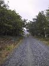
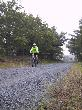
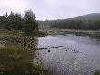
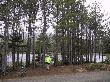
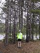
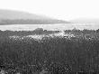
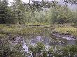
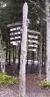

Jane cycling
Jane cycles closer
Water
Jane and trees
Jane and trees
Eagle lake looking moody

Still looking moody
Raindrops falling
Signposts
Another great breakfast and different to yesterday. Today was lemon poppy cake with blueberry sauce and yoghurt followed by blueberry waffle with maple syrup accompanied by fruit and a couple of rashers of bacon. Lovely.
And when we got back to our room after breakfast it had been "done" - impressive.
Despite the weather forecast we decided to head to the Acadia national park - the only national park in New England. We head off along Highways 1 and 3 until we get to Bar Harbor stopping only at the Thompson Island Information Centre to pick up some kayak and cycle leaflets. We drive into Cottage St, Bar Habor and found the Bar Harbor Bicycle Shop. They had quite a good selection of bikes for rent, as well as items to buy - Rich bought a rain jacket (which proved to be a wise purchase). We hired 2 recreation bikes, 2 helmets and a bike lock. No sooner had we collected them than the rain started, and it was heavy.
We waited in the bike hire shop until the rain calmed and cycled off in search of lunch. We ate sandwiches at the Whales tale and monitored the rain. It calmed down and cleared up so we cycled off to the harbour (not purposely but never mind). We cycled into the park and soon got onto the Carriage paths. We took the route around Eagle lake and were around half way round when it started to rain again. We continued cycling and were soon soaked!
Rather than exploring any more we headed back to the bike shop. Fortunately they had a toilet space we could use to changs into dry clothing. The bikes themselves seemed to be really well maintained.
We drove back to Camden and had warm showers. The bathroom has a warm air heater so we used it as a drying room for our gear - this worked really well.
It was still pouring with rain so we decided to eat at the Frogwater cafe - 2 doors away. The food was simple but filling and just what was needed. We tried another couple of Microbrews - Andrews Porter and Andrews Pale - both of which were good to drink.
(9 images.)| 
Jane cycling | 
Jane cycles closer | 
Water | 
Jane and trees |
| 
Jane and trees | 
Eagle lake looking moody |
Still looking moody | 
Raindrops falling |
| 
Signposts |